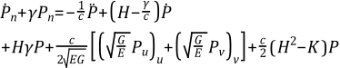

| Matrix or Vector | Shape Functions | Integration Points |
|---|---|---|
| Fluid Stiffness and Damping Matrices | Equation 11–127 | 2 x 2 |
The exterior structural acoustics problem typically involves a structure submerged in an infinite, homogeneous, inviscid fluid. The fluid is considered linear, meaning that there is a linear relationship between pressure fluctuations and changes in density. Equation 13–206 is the linearized, lossless wave equation for the propagation of sound in fluids.
(13–206) |
where:
| P = pressure |
| c = speed of sound in the fluid (input as SONC on MP command) |
| = second derivative of pressure with respect to time |
| Ω+ = unbounded region occupied by the fluid |
In addition to Equation 13–206), the following Sommerfeld radiation condition (which simply states that the waves generated within the fluid are outgoing) needs to be satisfied at infinity:
 | (13–207) |
where:
| r = distance from the origin |
| Pr = pressure derivative along the radial direction |
| d = dimensionality of the problem (i.e., d =3 or d =2 if Ω+ is 3-D or 2-D respectively |
A primary difficulty associated with the use of finite elements for the modeling of the infinite medium stems precisely from the need to satisfy the Sommerfeld radiation condition, Equation 13–207. A typical approach for tackling the difficulty consists of truncating the unbounded domain Ω+ by the introduction of an absorbing (artificial) boundary Γa at some distance from the structure.
The equation of motion Equation 13–206 is then solved in the annular region Ωf which is bounded by the fluid-structure interface Γ and the absorbing boundary Γa. In order, however, for the resulting problem in Ωf to be well-posed, an appropriate condition needs to be specified on Γa. Towards this end, the following second-order conditions are used (Kallivokas et al.([219])) on Γa:
In two dimensions:
(13–208) |
where:
| n = outward normal to Γa |
| Pn = pressure derivative in the normal direction |
| Pλλ = pressure derivative along Γa |
| k = curvature of Γa |
| γ = stability parameter |
In three dimensions:
 | (13–209) |
where:
| n = outward normal |
| u and v = orthogonal curvilinear surface coordinates (e.g., the meridional and polar angles in spherical coordinates) |
| Pu, Pv = pressure derivatives in the Γa surface directions |
| H and K = mean and Gaussian curvature, respectively |
| E and G = usual coefficients of the first fundamental form |
Following a Galerkin based procedure, Equation 13–206 is multiplied by a virtual quantity δP and integrated over the annular domain Ωf. By using the divergence theorem on the resulting equation it can be shown that:
(13–210) |
Upon discretization of Equation 13–210, the first term on the left hand side will yield the mass matrix of the fluid while the second term will yield the stiffness matrix.
Next, the following finite element approximations for quantities on the absorbing boundary Γa placed at a radius R and their virtual counterparts are introduced:
(13–211) |
(13–212) |
where:
| N1, N2, N3 = vectors of shape functions ( = {N1}, {N2}, {N3}) |
| P, q(1), q(2) = unknown nodal values (P is output as degree of freedom PRES. q(1) and q(2) are solved for but not output). |
Furthermore, the shape functions in Equation 13–211 and Equation 13–212 are set to:
(13–213) |
The element stiffness and damping matrices reduce to:
For two dimensional case:
(13–214) |
(13–215) |
where:
| dλe = arc-length differential |
These matrices are 6 x 6 in size, having 2 nodes per element with 3 degrees of freedom per node (P, q(1), q(2)).
For three dimensional case:
(13–216) |
(13–217) |
where:
| dAe = area differential |
These matrices are 8 x 8 in size, having 4 nodes per element with 2 degrees of freedom per node (P, q) (Barry et al.([218])).
For axisymmetric case:
(13–218) |
(13–219) |
where:
| x = radius |
These matrices are 4 x 4 in size having 2 nodes per element with 2 degrees of freedom per node (P, q).